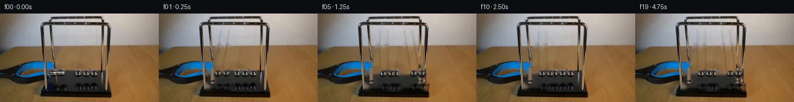

![首帧]()

Round 00
2026-11-06T04:08:30.611242+00:00像素候选变化代码 +222/−0inspection 更新
pixels 2235622a9a9a5b46 · code 5332383f1a6bc145
查看本轮 generate.py 真实 diff
--- previous/generate.py
+++ current/generate.py
@@ -0,0 +1,222 @@
+"""PixelWorld case_0053: Newton's cradle — grabber releases two balls.
+
+Local pixel operations only (NumPy + OpenCV inpaint). Frame 00 is byte-identical
+to first_frame.png; frames 01-19 composite analytic-pendulum-driven sprites over
+two inpainted clean background plates.
+"""
+from pathlib import Path
+import numpy as np
+import cv2
+from PIL import Image, ImageDraw
+import artifact_io
+
+HERE = Path(__file__).parent
+F0 = np.array(Image.open(HERE / "first_frame.png").convert("RGB"))
+
+# ---------------------------------------------------------------- geometry --
+R = 6.9 # ball visual radius
+CY0 = 99.0 # equilibrium ball-centre y
+PY = 26.0 # string pivot y (under front top bar)
+L = CY0 - PY - 0.0 # pivot-to-centre length, 73 px
+EQX = np.array([100.0, 113.0, 126.0, 139.0, 152.0])
+AMP = 15.0 # frame-0 horizontal displacement (px)
+OMEGA = np.pi # quarter swing = 0.5 s (2 frames)
+
+def _rise(dx):
+ theta = np.arcsin(np.clip(dx / L, -1, 1))
+ return CY0 - L * (1 - np.cos(theta))
+
+def pos_left(dx):
+ cy = _rise(dx)
+ return [(EQX[0] - dx, cy), (EQX[1] - dx, cy)] # left = smaller x
+
+def pos_right(dx):
+ cy = _rise(dx)
+ return [(EQX[3] + dx, cy), (EQX[4] + dx, cy)] # right = larger x
+
+# per-frame (t=1..19): ('L',dx) | ('R',dx) | ('C',0)
+S = 1 / np.sqrt(2)
+plan = {
+ 1: ('L', AMP * S * 1.0000),
+ 2: ('C', 0),
+ 3: ('R', AMP * S * 0.9500), 4: ('R', AMP * 0.9500), 5: ('R', AMP * S * 0.9500),
+ 6: ('C', 0),
+ 7: ('L', AMP * S * 0.9025), 8: ('L', AMP * 0.9025), 9: ('L', AMP * S * 0.9025),
+ 10: ('C', 0),
+ 11: ('R', AMP * S * 0.8574), 12: ('R', AMP * 0.8574), 13: ('R', AMP * S * 0.8574),
+ 14: ('C', 0),
+ 15: ('L', AMP * S * 0.8145), 16: ('L', AMP * 0.8145), 17: ('L', AMP * S * 0.8145),
+ 18: ('C', 0),
+ 19: ('R', AMP * S * 0.7738),
+}
+RIGHT_FRAMES = {t for t, (k, _) in plan.items() if k == 'R'}
+
+# ---------------------------------------------------------------- sprites ---
+def make_ball_sprite():
+ """15x15 chrome ball + feathered circular alpha, sampled from ball at (139,99)."""
+ patch = F0[92:107, 132:147].astype(np.float32).copy()
+ yy, xx = np.mgrid[0:15, 0:15]
+ d = np.hypot(xx - 7, yy - 7)
+ alpha = np.clip(R + 0.35 - d, 0, 1)
+ return patch, alpha
+
+BALL, BALL_A = make_ball_sprite()
+
+def make_refl_sprite():
+ """Reflection + contact-shadow sprite, sampled under ball (139,99), y 111..128."""
+ y0, y1, x0, x1 = 111, 129, 130, 149
+ patch = F0[y0:y1, x0:x1].astype(np.float32).copy()
+ h, w = patch.shape[:2]
+ yy, xx = np.mgrid[0:h, 0:w]
+ lum = patch.mean(2)
+ # dark features (shadow + dark mirror) and cool specular dots
+ a_dark = np.clip((26 - lum) / 22, 0, 0.9)
+ cool = patch[:, :, 2].astype(np.int32) - patch[:, :, 0].astype(np.int32)
+ a_cool = np.clip((cool - 6) / 22, 0, 0.8) * (lum < 90)
+ alpha = np.maximum(a_dark, a_cool)
+ # contact shadow bump just under the contact point (y ~113-115)
+ shadow = 0.5 * np.exp(-(((xx - 9) / 7.5) ** 2 + ((yy - 3.2) / 2.0) ** 2))
+ alpha = np.maximum(alpha, shadow)
+ alpha *= np.clip((yy - 0) / 1.5, 0, 1) * np.clip((h - 0.5 - yy) / 1.5, 0, 1)
+ return patch, np.clip(alpha, 0, 0.92)
+
+REFL, REFL_A = make_refl_sprite()
+
+# ------------------------------------------------------- composite helpers --
+def place(rgba_center, alpha, cx, cy, shape):
+ """Warp an (h,w,3) patch + (h,w) alpha to fractional centre (cx,cy)."""
… diff truncated; 135 more lines …